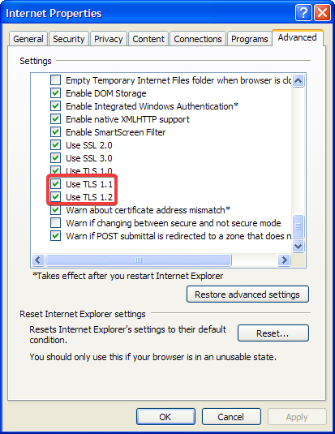

TLS 1.1 and TLS 1.2 on XP x64
Get your Windows XP x64 system to talk to more modern websitesFor your convenience, it has been simplified to these four commands:
reg delete "HKLM\SOFTWARE\Microsoft\Internet Explorer\AdvancedOptions\CRYPTO\TLS1.1" /v "OSVersion" /f
reg delete "HKLM\SOFTWARE\Microsoft\Internet Explorer\AdvancedOptions\CRYPTO\TLS1.2" /v "OSVersion" /f
reg delete "HKLM\SOFTWARE\Wow6432Node\Microsoft\Internet Explorer\AdvancedOptions\CRYPTO\TLS1.1" /v "OSVersion" /f
reg delete "HKLM\SOFTWARE\Wow6432Node\Microsoft\Internet Explorer\AdvancedOptions\CRYPTO\TLS1.2" /v "OSVersion" /f
After running these commands, you can now go to Internet Options, Advanced, scroll down and enable TLS 1.1 and 1.2 like you would in any modern Windows version.
